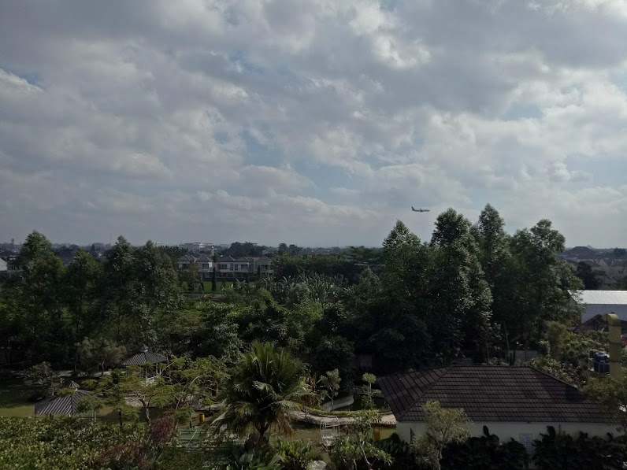

Rumah Kontrakan di Parepare
Memilih rumah adalah perkara yang tidak mudah. Ada beberapa orang yang menghabiskan waktu sebulan dua bulan untuk mencari rumah idaman namun pada akhirnya belum juga mendapatkan yang sesuai keinginan. Rumah berdasarkan arti seninya adalah jiwa dari sekelompok penghuninya. Rumah dengan kondisi yang baik menandakan bahwa penghuninya pun juga baik, begitupun sebaliknya. Hal ini disebabkan karena manusia memiliki kecenderungan untuk memperbaiki, membersihkan dan meningkatkan lingkungan sekitar mereka. Oleh karena itu, tentunya sahabat kost ada tidak ingin mendapatkan rumah yang tidak dapat terawat dengan baik.
Rumah memiliki banyak komponen secara umum, yakni bagian depan, bagian tengah dan bagian belakang. Bagian depan menjadi pusat perhatian orang, kesan tamu, keluarga atau orang yang lewat tertuju pada bagian ini. Bagian ini memiliki elemen-elemen biasa seperti driveway, taman, kolam ikan, dan lanskap yang menarik. Meskipun demikian, rumah yang dilengkapi dengan elemen tadi akan mempengaruhi kesulitan dalam pemeliharannya. Jadi, apabila sahabat kost ada sedikit sibuk dalam membangun rumah abadi, maka minimalkanlah elemen-elemen tersebut. Bagian tengah rumah menjadi komponen utama dalam seisi rumah. Disinilah keluarga pemilik bangunan ini bercengrama dan notabenenya hidup dalam keseharian. Elemen-elemen pada bagian ini menyangkut dengan ruang yang ada di dalam rumah. Biasanya rumah akan terdiri dari satu ruang tamu, dua kamar tidur, satu toilet, satu ruang keluarga dan satu dapur. Lima macam ruang ini memiliki pengaruh besar dalam kualitas rumah itu sendiri. Hal-hal yang perlu diperhatikan terhadap ruangan tersebut adalah dimensi ruang, ketinggian ruang, kelembaban ruang dan sirkulasi. Untuk mendapatkan bagian tengah rumah yang baik, sebaiknya mengacu pada hal yang dijabarkan tadi serta beberapa hal yang bersifat optional atau preferensi keluarga dan diri sendiri.
Selanjutnya bagian belakang, saat melakukan kontrak rumah, bagian ini dianggap kurang penting. Banyak developer dengan model rumah sederhana tidak memperhatikan bagian ini. Namun, bagian belakang ini biasanya dekat dengan dapur dan kamar utama. Hal ini membuatnya penting juga untuk diperhatikan untuk menyelamatkan kualitas pada kedua ruangan tersebut. Hal yang perlu diperhatikan adalah adanya pemandangan luas dan ruang yang cukup untuk menjaga kelembaban dan udara dapat masuk dari arah belakang.
Harga kisaran rumah kontrakan di Parepare
Dari beberapa hasil yang kami temukan, harga kisaran rumah yang ada di Parepare yakni sepuluh jutaan. Harga tersebut dipicu oleh banyak hal, diantaranya lokasi, kualitas, atau kuantitas perabot yang ada di dalamnya. Rumah-rumah tersebut tersebar di beberapa lokasi yang cukup terkenal di kota ini. Kebanyakan rumah kontrakan ada di kecamatan Soreang dan Kecamatan Bacukiki.
Kedua kecamatan tersebut memiliki sejumlah daya tarik atau aminities yang kuat. Semisalnya kecamatan Soreang memiliki Universtias Muhammadiyah dan Institut Agama Islam Negeri Parepare. Selain itu, daerah ini juga dilengkapi dengan toko kelontong, pasar, dan beragam kebutuhan rumah tangga. Sementara kecamatan Bacukiki memiliki Sekolah Tinggi Ilmu Ekonomi(STIE) Amsir. Kecamatan ini juga merupakan kecamatan yang memiliki tingkat kepadatan dan pertumbuhan ekonomi yang tinggi. Hal itu membuat para pemilik rumah menyewakan rumah mereka.
Apabila sahabat kost ada belum memiliki sejumlah potensi rumah kontrakan, kalian dapat menginap di kost atau di hotel.Kost di Parepare lebih beragam lagi, meskipun hanya untuk diperuntukkan untuk sejumlah orang, kost-kostan dipatok dengan harga murah serta memberikan penginapan yang nyaman dan aman selama anda mencari rumah kontrakan yang akan dihuni untuk bebepara tahun kedepan.